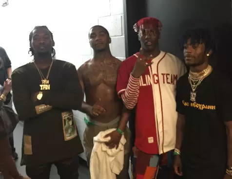
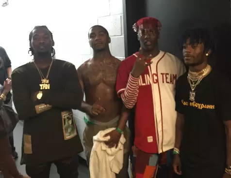
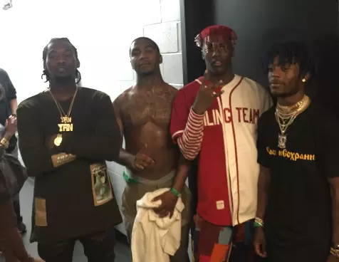

Homepage | Cooking Dance | Based God's Curse | Lil B's influence
Lil B - Pretty Boy Remix Warning: Extremely Vulgar language
Lil B is arguably the most influential rapper of all time. As he started his professional career in music no rapper would
dare try to be successful without a record label. This was a time when Kanye West, Jay Z, and other extremely accomplished
rappers dominated the scene. Lil B decided to challenge establishment artists and turn to a platform no other rappers have
turned to, the internet. Lil B started publishing music on Myspace and quickly gained an underground following. As Myspace died
out he turned to Youtube and Twitter to gain popularity. During this period Lil B was looked at as a "weirdo" or someone who
"just couldn't rap" but this was far from the truth. In 2009 Lil B published the song Pretty Boy, for the time period this song
was extremely out of place. He carried a creative easy going flow, boisterous ad-libs, and low budget music videos. All of
which were out of the usual compared to other influential songs at the time like Heartless by Kanye West. This unique style
ended up winning him a spot on the XXL freshman list in 2011 next to Kendrick Lamar. Lil B was far ahead of his time. in 2018
almost all of these bizarre attributes Lil B had in 2009 are common. Almost no rappers sign a record label before they start
uploading music on websites such as soundcloud, using platforms just like Lil B did. Modern rappers have to think of a unique
ad-lib that they can use to distinguish themselves from the rest of the crowd. Rappers such as Lil Yachty say the only reason
they started rapping was because of Lil B and his massive influence in rap music.

Offset, Lil B, Lil Yachty, and Lil Uzi Vert
 
Offset, Lil B, Lil Yachty, and Lil Uzi Vert

Offset, Lil B, Lil Yachty, and Lil Uzi Vert